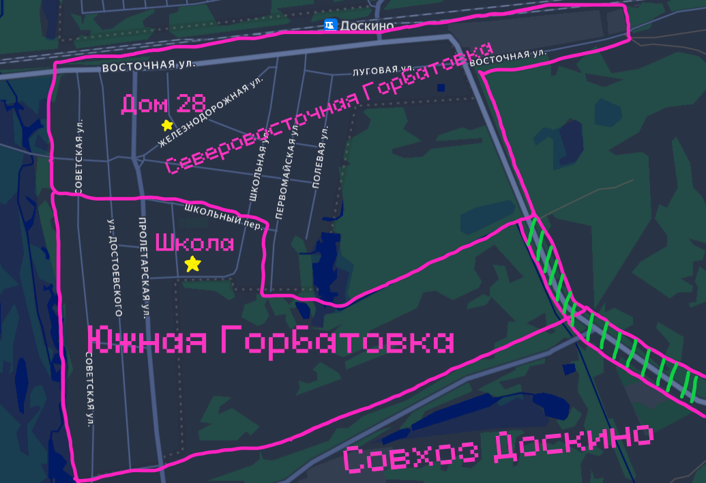
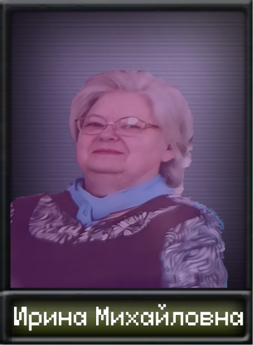
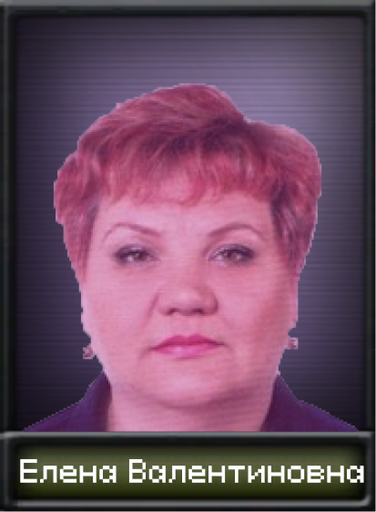
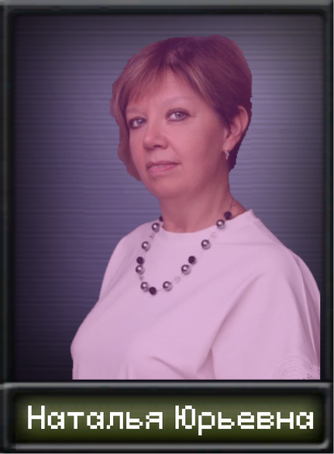
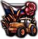
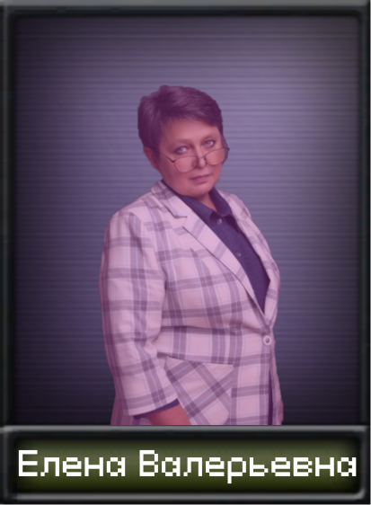

Основной сюжет

Южная Горбатовка - часть Горбатовки, представляющая собой территорию от ул. Советской Милиции до школы, пятёрочки и до бугров. Получает помощь из Нижнего Новгорода через КПП "НПГ".

Южной Горбатовкой управляет "Школьное сообщество". Во главе школьного сообщества находится Ирина Михайловна. Ирина Михайловна всё чаще пропадает в своей лаборатории, где разрабатывает ядерное оружие. Руководство перешло Елене Валентиновне, но главнее всех остаётся Ирина Михайловна.


Самое мощное агентство в Горбатовке работает на школьное сообщество. Руководитель агентства Наталья Юрьевна. Приоритетнейшая цель для агентства и всей Южной Горбатовки - Шилов. Население готовится к интеграции с Совхозом Доскино. Почти всё для этого сделано. Осталось либо сместить Аллигатора, либо поймать Шилова.

Отношения с Северо-Восточной Горбатовкой в фазе Холодной войны. Идёт война агентств. До открытых боестолкновений ещё не дошло, но обстановка всё накаляется и накаляется. К тому же, Шилов скрывается с Северо-Восточной Горбатовке. Как его поймать? Хороший вопрос для "агентства Южной Горбатовки".
Сюжет разделяется
1) Елена Валентиновна полноценно берёт власть в руки и меняет курс школьного сообщества.
Елена Валентиновна частично управляет школьным сообществом. Главной всё так же остаётся Ирина Михайловна. Из-за этого Елене Валентиновне приходится постоянно отправляться в лабораторию за одобрением Ирины Михайловны какого-либо решения. Эффективность управления падает. "Школьный Совет Управляющих" выдвинул предложение о полном главенстве Елены Валентиновны. Почти все сказали да. Ирина Михайловна одобрила. Елена Валентиновна получает полную власть над Южной Горбатовкой.
1.1) Ревягинский Рейх
Елена Валентиновна берёт за основу нового курса - национализм. Тотально военнизирует общество и какую-никакую промышленность. С агентами Северо-Восточной Горбатовки начинают жестоко и публично расправляться. Львиную долю бюджета новый фюрер выделяет на разработку ядерного оружия. Покупает новое оборудование, приглашает учёных из Нижнего Новгорода, улучшает условия труда для Ирины Михайловны. Начинается насильная переделка гражданских зданий в военную инфраструктуру.
1.2) Социализм с Ревягинской спецификой
Елена Валентиновна берёт за основу нового круса - коммунизм/социализм. Усиливается контроль над обществом, начинается активное засеевание поля. Усиливается давление на Совхоз Доскино, с целью более быстрой интеграции.
2) Князевское Агентство захватывает власть в Южной Горбатовке
Князевские агенты распространяют идеи интеграции двух Горбатовок. С внедрением в школьное сообщество начинается разрушение этой системы. В школьном сообществе начинается хаос и почти все участники сбегают. Остаются лишь самые лояльные. Они и возглавят Южную Горбатовку, пока идёт интеграция.
2.1) План Князевского Агентства сорван
Князевское Агентство рассекретили. Южная Горбатовка начинает готовиться к войне. Проходят жестокие расправы над князевскими агентами. Начинается "Война за Горбатовское Единство".
3) Управление возвращается в руки директора


Елена Валерьевна выбирает основой нового курса - демократию. Она начинает развитие производства. На заработанные деньги вооружает армию. Её цель - максимально мирно решить все вопросы. Будут ли все согласны? Вводит открытость управления для населения. Единственное, что скрывается, разработка ядерного оружия.
На главную